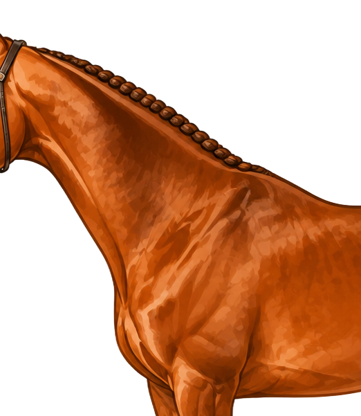
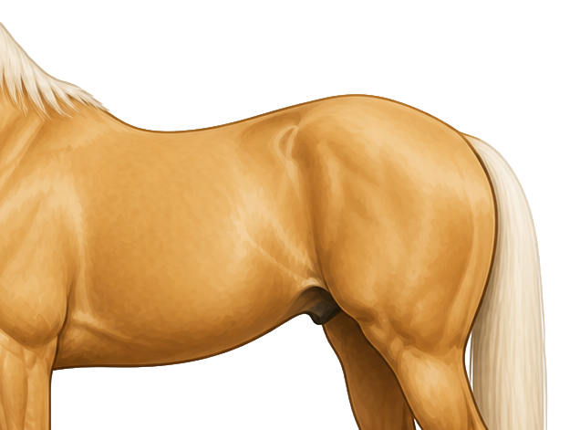
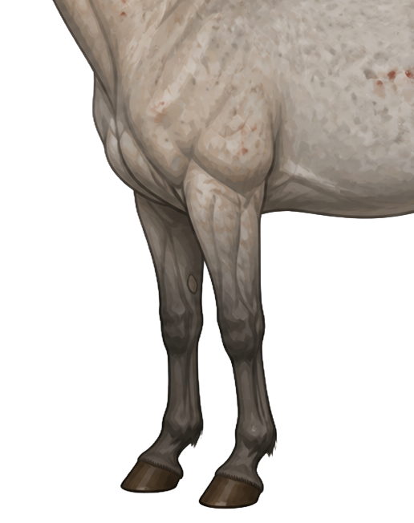
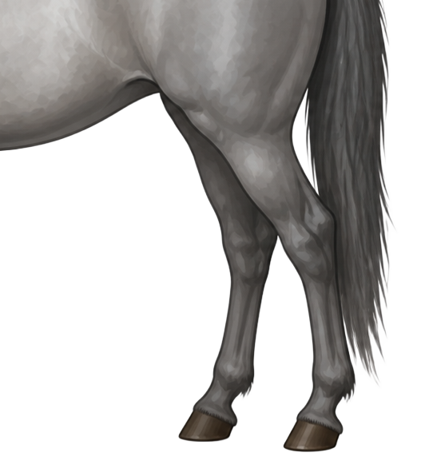

Five Regions, One Horse
This lesson covers the vocabulary of external equine anatomy organized by region. Select a tab to view the labeled diagram and the structures within it. Drag any dot or label to adjust its position — changes save automatically per region.

Paste this to Claude to bake in your positions — HEAD

Paste this to Claude to bake in your positions — NECK & SHOULDER

Paste this to Claude to bake in your positions — BODY

Paste this to Claude to bake in your positions — FRONT LEGS

Paste this to Claude to bake in your positions — BACK LEGS
Head Vocabulary
Ear
The pair of upright structures at the top of the head. Horses use their ears for hearing and to show attention and mood.
Poll
The highest point of the head, located between the ears.
Foretop
The section of mane that grows from the poll and falls forward between the ears onto the forehead.
Forehead
The broad area of the face between the ears and the bridge of the nose, above the eyes.
Eye
The large, oval eye located on the side of the head. This position gives the horse a wide field of vision.
Cheek
The flat area of the face below the eye.
Nostril
One of the two openings of the nose. Horses breathe only through their nostrils, which expand to allow airflow.
Muzzle
The lower part of the face, including the nose, lips, and chin. Horses use the muzzle to explore and pick up feed.
Upper Lip
The upper lip, used to grasp and sort feed.
Lower Lip
The lower lip, which is soft and relaxed when the horse is resting.
Chin Groove
The groove on the underside of the lower jaw where the two jawbones meet. This is where a curb chain rests.
Jaw
The lower bony structure of the head that shapes the cheek and chin.
Throatlatch
The area where the head connects to the neck under the jaw. This is where a halter or bridle fastens.
Neck & Shoulder Vocabulary
Throatlatch
The area where the head meets the neck, just under the jaw.
Crest
The top ridge of the neck that runs from the poll to the withers. The mane grows along the crest.
Mane
The long hair that grows along the crest of the neck. It may fall to either side depending on the horse.
Neck
The structure that connects the head to the body. Neck shape and length can affect how a horse carries itself and moves.
Jugular Groove
The line along the lower side of the neck where the jugular vein runs beneath the skin.
Shoulder
The area where the front leg connects to the body, including the shoulder blade. Shoulder angle influences how freely the front leg moves.
Point of Shoulder
The forward point of the shoulder where the front of the body meets the upper leg.
Chest
The front of the horse between the front legs. Chest width can vary depending on the horse's build.
Upper Arm
The section of the front leg between the shoulder and the elbow.
Body Vocabulary
Withers
The highest point of the back at the base of the neck. Horse height in hands is always measured to the withers.
Back
The topline between the withers and the loin. This is the weight-bearing area under the saddle.
Loin
The topline between the end of the back and the croup, behind the saddle area.
Croup
The rounded top of the hindquarters from the highest hip point to the tail. The angle and length of the croup vary between breeds.
Point of Hip
The bony prominence on the side of the pelvis, visible as a bump on most horses when viewed from above or from the side.
Dock
The bony, muscular upper part of the tail from which the tail hair grows.
Thigh
The large muscular region of the upper hind leg, above the stifle.
Buttock
The rounded muscular area at the back of the hindquarters, below the dock.
Tail
The long hair growing from the dock. Horses use the tail to swish flies and to communicate mood.
Flank
The soft area just behind the last rib and in front of the hind leg. The flank moves visibly with each breath.
Barrel
The rounded rib cage section between the forelegs and the flank. Width and depth here reflect lung and organ capacity.
Heart Girth
The circumference of the body just behind the elbow and withers. This measurement is used for weight tape estimates.
Sheath
The fold of skin on a male horse that encloses and protects the penis at rest.
Front Legs Vocabulary
Upper Arm
The section of the front leg between the shoulder joint and the elbow.
Elbow
The prominent joint where the forearm meets the body, visible on the inside of the upper front leg.
Forearm
The upper portion of the lower front leg between the elbow and the knee. It contains the largest bone section of the front lower leg.
Chestnut
A small, oval vestigial growth on the inside of each leg. Every horse has them, and no two sets are identical — useful for identification.
Knee
The large joint in the middle of the front leg between the forearm and the cannon bone. Despite the name, it is equivalent to the human wrist.
Cannon Bone
The large bone of the lower leg between the knee and the fetlock. The same structure appears on all four legs.
Fetlock
The prominent joint between the cannon bone and the pastern. The tuft of hair at the back of this joint covers the ergot.
Ergot
A small vestigial horn growth at the back of the fetlock, hidden in the hair tuft. Most horses have them.
Pastern
The sloping section of the leg between the fetlock and the hoof.
Coronet Band
The band of soft tissue at the top of the hoof wall. The hoof wall grows down from the coronet band.
Hoof
The hard outer structure that protects and supports the foot. It includes the hoof wall, sole, and frog.
Back Legs Vocabulary
Stifle
The large upper joint of the hind leg, equivalent to the human knee. Located where the thigh meets the gaskin.
Gaskin
The muscular region between the stifle and the hock, equivalent to the human calf.
Hock
The large angled joint in the middle of the hind leg. It is equivalent to the human ankle and provides much of the hind leg's propulsion.
Cannon Bone
The large bone of the lower leg between the hock and the fetlock. The same structure appears on all four legs.
Fetlock
The prominent joint between the cannon bone and the pastern. The tuft of hair at the back of this joint covers the ergot.
Ergot
A small vestigial horn growth at the back of the fetlock, hidden in the hair tuft. Most horses have them.
Pastern
The sloping section of the leg between the fetlock and the hoof. Pastern angle plays a role in how the horse absorbs shock when moving.
Coronet Band
The band of soft tissue at the top of the hoof wall. The hoof wall grows down from the coronet band.
Hoof
The hard outer structure that protects and supports the foot. It includes the hoof wall, sole, and frog.